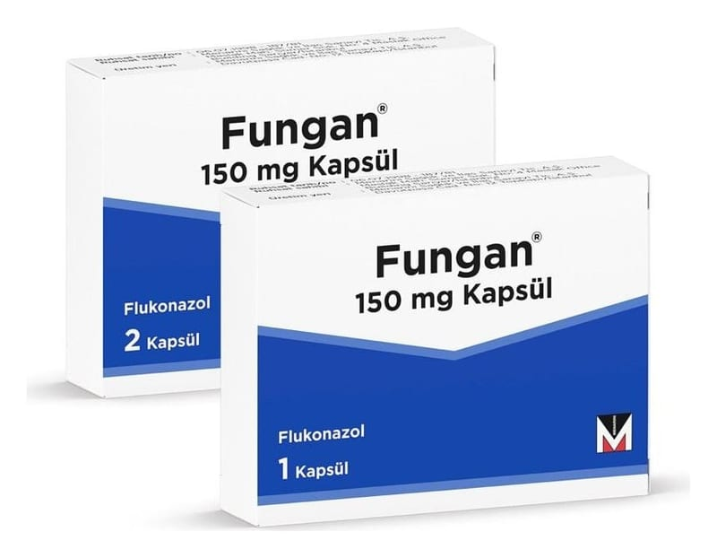

Fungan 150 mg Kapsül, 2 Adet

Ne için kullanılır
KT · Bölüm 1FUNGAN 1 numara açık pembe/açık pembe sert jelatin kapsül içinde beyaz toz bulunmaktadır. 1 ve 2 kapsüllük blister ambalajlarda sunulmaktadır.
FUNGAN, antifungal adı verilen ve mantar hastalıklarına karşı kullanılan bir grup ilaçtan biridir. Etkin madde flukonazoldür.
FUNGAN, mantarların neden olduğu enfeksiyonları tedavi etmek için kullanılır ve ayrıca kandidal mantar enfeksiyonu kapmanızı engellemek için de kullanılabilir. Mantar enfeksiyonlarının en yaygın nedeni, Candida adı verilen bir mayadır.
FUNGAN yetişkinlerde aşağıdakilerin tedavisinde kullanılır: ● Kriptokokal menenjit (beyin zarında bir mantar enfeksiyonu) ● Koksidioidomikoz (vadi humması olarak bilinen, akciğerleriniz yoluyla vücudunuza giren mantarın neden olduğu bir hastalıktır)
● Candida adı verilen bir mantar türünün neden olduğu ve kan dolaşımında, vücut organlarında (örn. kalp, akciğerler) veya idrar yollarında bulunan enfeksiyonlar ● Mukozal pamukçuk (ağız veya boğazda meydana gelen mantar enfeksiyonu) ● Genital pamukçuk (kadında veya erkekte cinsel organın mantar enfeksiyonu) ● Deri enfeksiyonları (örn. atlet ayağı adı verilen ayak mantarı, saçkıran, kasık mantarı, tırnak mantarı)
FUNGAN yetişkinlerde aşağıdakilerin önleyici tedavisinde kullanılır: ● Kriptokokal menenjitin tekrarlanmasını önlemede ● Mukozal pamukçukların tekrarlanmasını önlemede ● Vajinal pamukçuk tekrarlanmasını önlemede ● Candida adlı mantarın sebep olduğu enfeksiyonlardan koruma (eğer bağışıklık sisteminiz zayıfsa ve düzgün çalışmıyorsa)
FUNGAN yaşları 0-17 arasında değişen yenidoğan bebekler, bebekler, küçük çocuklar, çocuklar ve ergenlerde aşağıdakilerin tedavisinde kullanılır: ● Mukozal pamukçuk (ağız veya boğazda meydana gelen enfeksiyon) ● Candida adı verilen bir mantar türünün neden olduğu ve kan dolaşımında, vücut organlarında (örn. kalp, akciğerler) veya idrar yollarında bulunan enfeksiyonlar ● Kriptokokal menenjit (beyin zarında bir mantar enfeksiyonu)
FUNGAN yaşları 0-17 arasında değişen yenidoğan bebekler, bebekler, küçük çocuklar, çocuklar ve ergenlerde aşağıdakilerin önleyici tedavisinde kullanılır: ● Candida adlı mantarın sebep olduğu enfeksyionlardan koruma (eğer bağışıklık sisteminiz zayıfsa ve düzgün çalışmıyorsa) ● Kriptokokal menenjitin tekrarlanmasını önleme